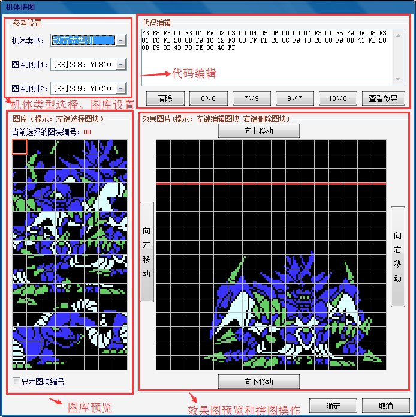
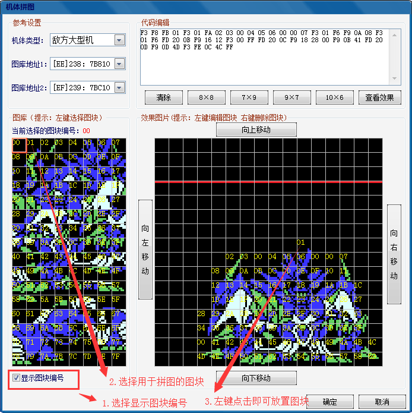

功能区域分布：

1.机体类型选择、图库设置：机体类型有我方小型机、敌方小型机、我方大型机、敌方大型机4种可供选择，小型机指的是机体主体占用图库的数量，小型机为1个图库，大型机为两个图库，一个图库的大小为8*8=64个图块。图库地址即机体图库的地址，一共为256个图库。
2.图库预览：显示的为选择的两个图库的图像数据，选择图块编号可查看128个图块所对应的编号。
3.代码编辑：对于已经手动拼好的机体，直接将拼好的部分导入图库，然后输入相应的拼图代码即可（用于在其它版本中直接从CT中导出图像数据，然后提取拼图代码的情况）。
4.效果图预览和拼图操作：拼图的时候建议在左下角选择“显示图块编号”，左键在左边图库中选中相应的图块，在右边再次点击即可实现拼图操作，右键已经存在的图块即可删除图块，拼图完成点击确定即可完成拼图。具体操作如下图所示：

向上下左右移动可调整机体整体坐标，左方机体顶右下角放置，右方机体顶左下角放置。